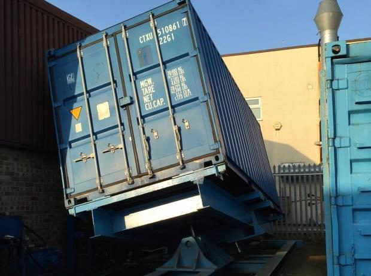

How we make it
Automated production. In-house testing.
Three facilities, one manufacturing standard. Every product that leaves a PPC Philton factory has been produced on automated lines and tested in-house — not sample-checked after the fact.
Our facilities
UK · China · India
Our process
From raw material to dispatch


Raw material testing
Film and fabric batches are tested in-house before they enter production — not accepted on supplier certificates alone.
Automated extrusion & welding
Touchscreen-controlled production lines maintain consistent tolerances across every run.
Weld pressure-testing
100% of flexitank end welds are pressure-tested to 1 bar on our proprietary testing platform, which simulates real transport conditions.
QA sign-off & dispatch
Final inspection against ISO 9001, 14001 and 22000 quality standards before the product ships.
Want to see the standard behind the claims?
Our quality and certifications page details the accreditations that back every product.